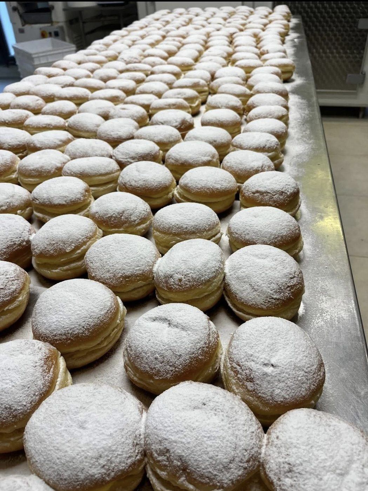
Brioche, bomboloni e mignon sfornati ogni giorno, da gustare al banco o da portare via.
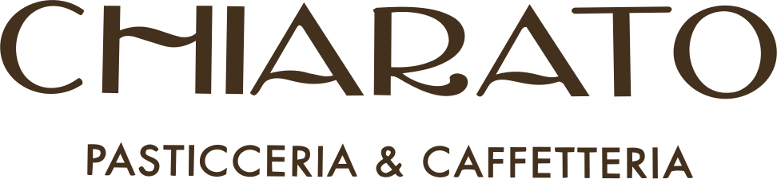
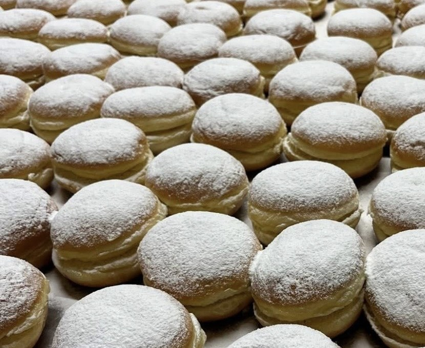
Pasticceria & Caffetteria · Arcade (TV)
Dalla colazione del mattino alla selezione di pasticceria mignon, fino alle torte personalizzate per i tuoi momenti più speciali: ogni nostra creazione è realizzata a mano con ingredienti freschi, genuini e accuratamente selezionati.
Il nostro mondo
Dalla colazione al dolce delle grandi occasioni: ingredienti scelti, lavorazioni lente e una cura che si riconosce al primo assaggio.

Brioche, bomboloni e mignon sfornati ogni giorno, da gustare al banco o da portare via.
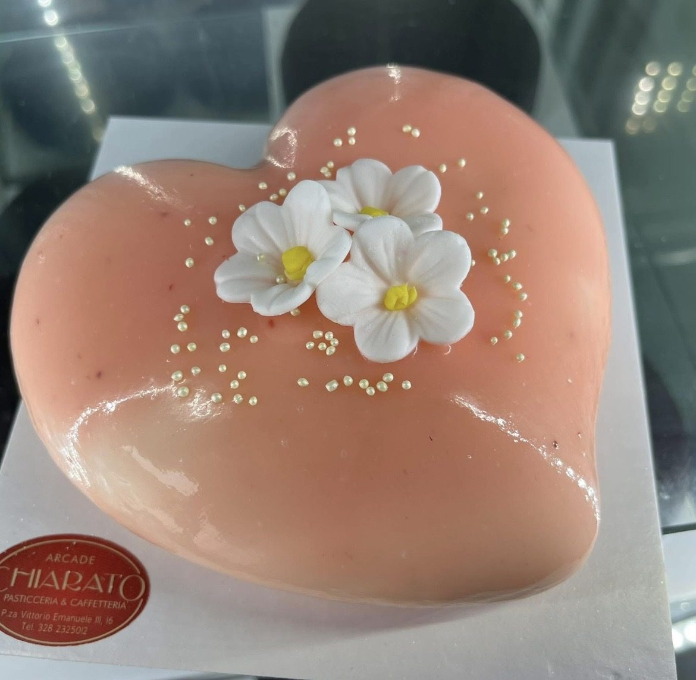
Ci raccontate l'occasione, noi la traduciamo in forma, gusto e decorazione.
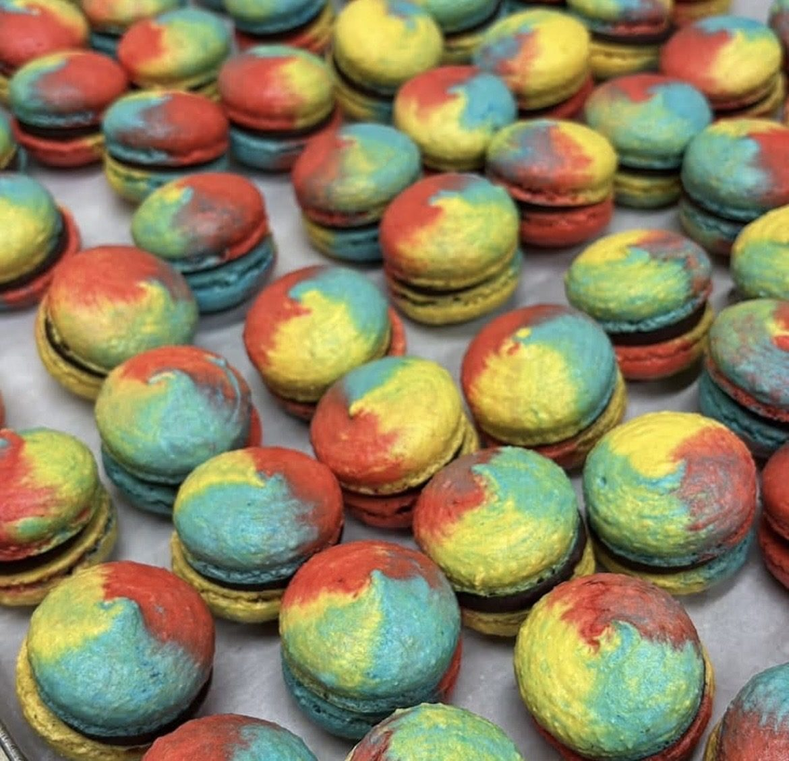
Gusci friabili e ripieni cremosi, in tutti i colori: da assaggiare o da regalare.
Prenota la tua torta
Compleanni, battesimi, matrimoni o semplicemente perché oggi è un buon giorno: raccontateci l'occasione, al resto pensiamo noi.
Rispondiamo negli orari di apertura. Per le torte su misura vi chiediamo qualche giorno di anticipo.
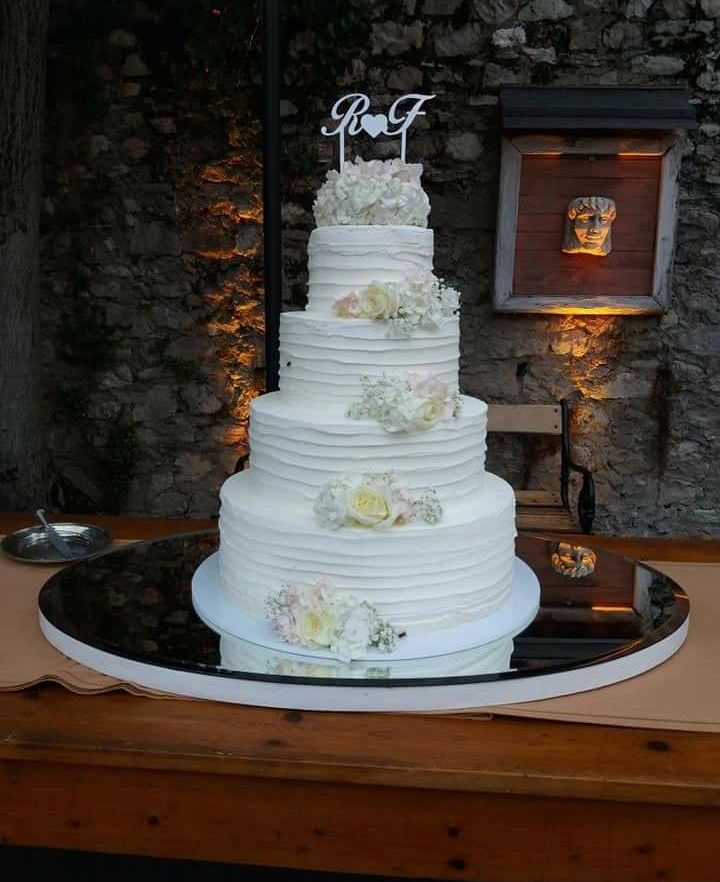
Matrimoni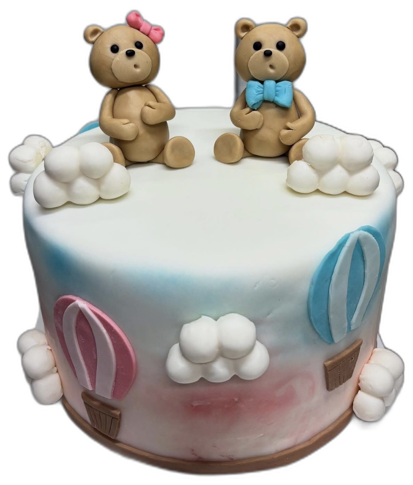
Nascita e battesimo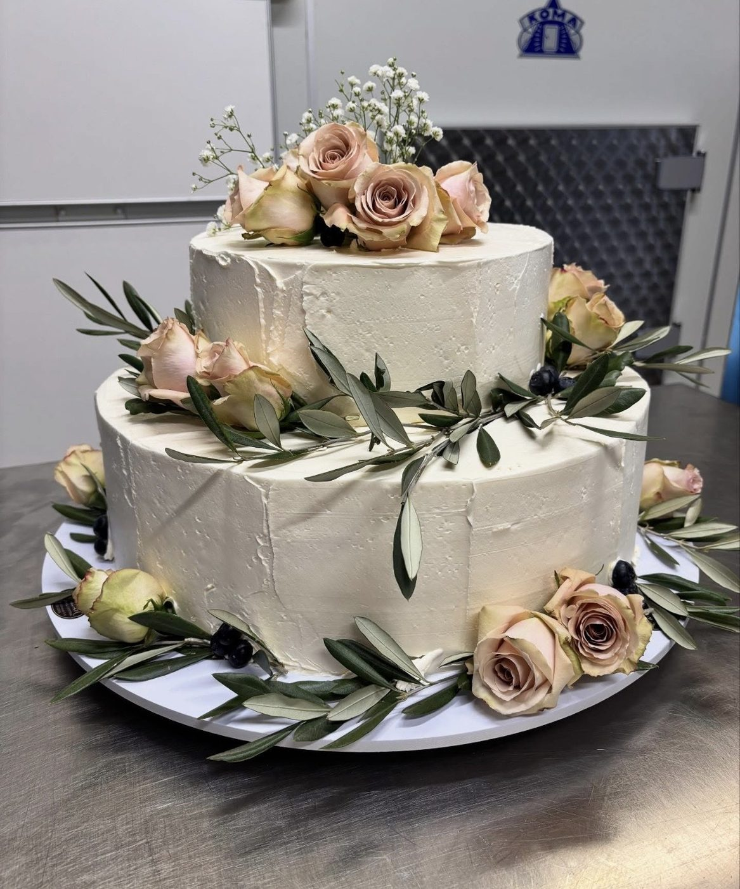
Cerimonie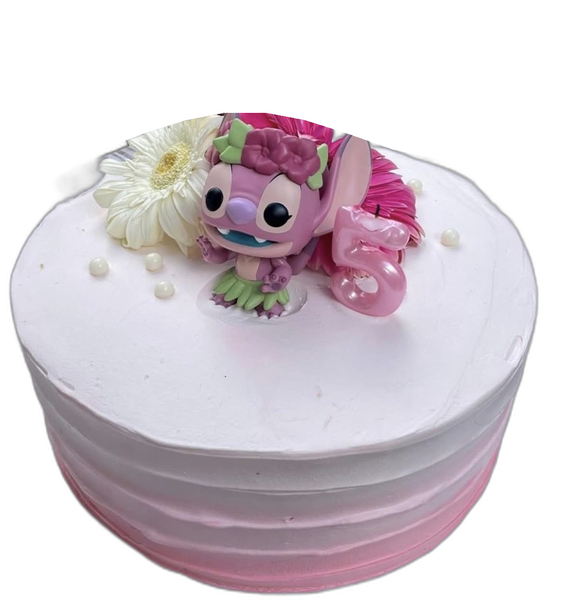
Torte per bambini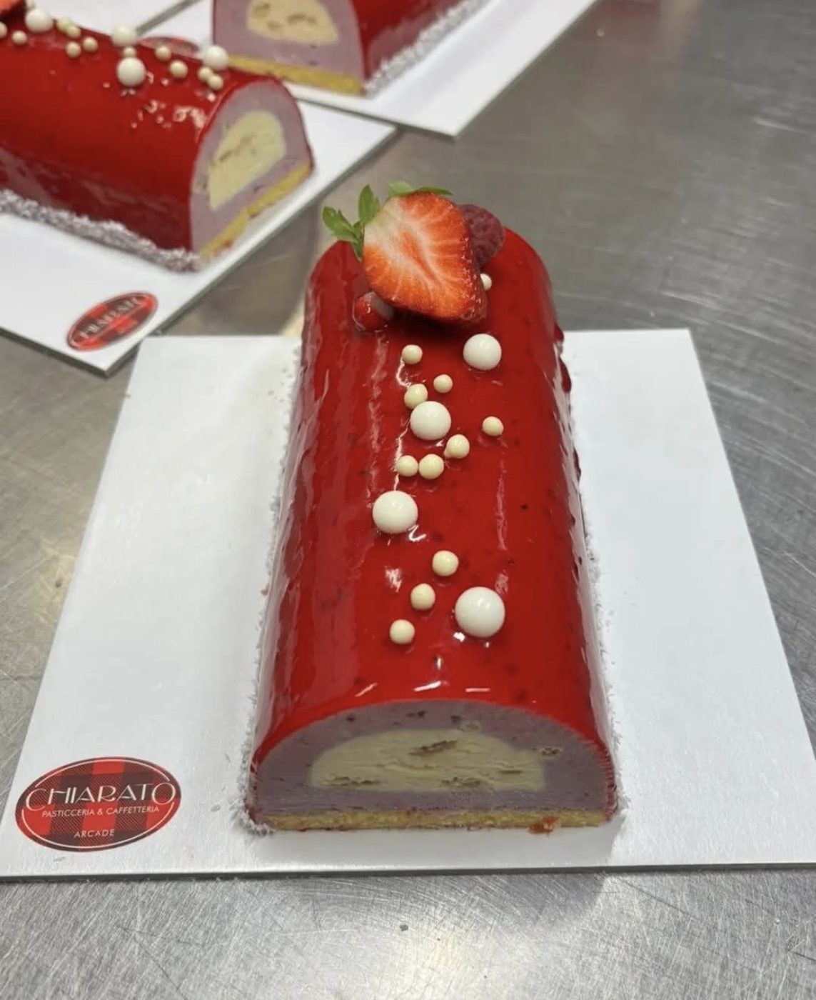
Monoporzioni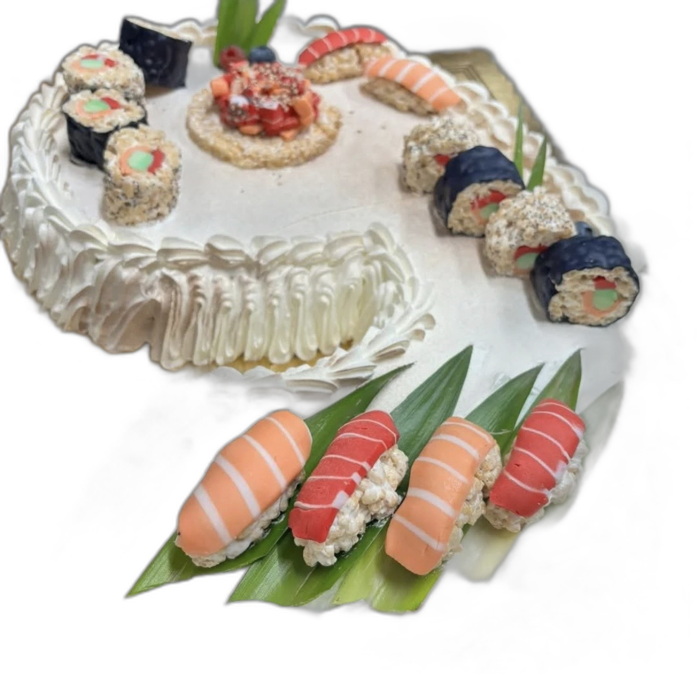
Buffet e salatoDicono di noi
Recensioni pubblicate dai clienti su Google e Tripadvisor. Leggile su Tripadvisor
★★★★★Caffetteria e pasticceria di qualità. Offre un'ampia varietà di pastine, mini size, brioche e torte.
Paolo
★★★★★Una bavarese con croccante e crema di lamponi, una delizia! Sono sicura che anche il resto della pasticceria sia buonissima.
Arianna
★★★★★Gentilezza e professionalità sono caratteristiche che ho trovato in questa bella pasticceria.
Anna
★★★★★Posto molto curato, ottimi sia la qualità che il servizio.
Albert
Passate per un caffè,
restate per il dolce.
Mar — Ven 7:30—12:30 · 15:30—19:30 Sabato 7:30—12:30 · 15:30—19:00 Domenica 7:30—12:30 Lunedì chiuso